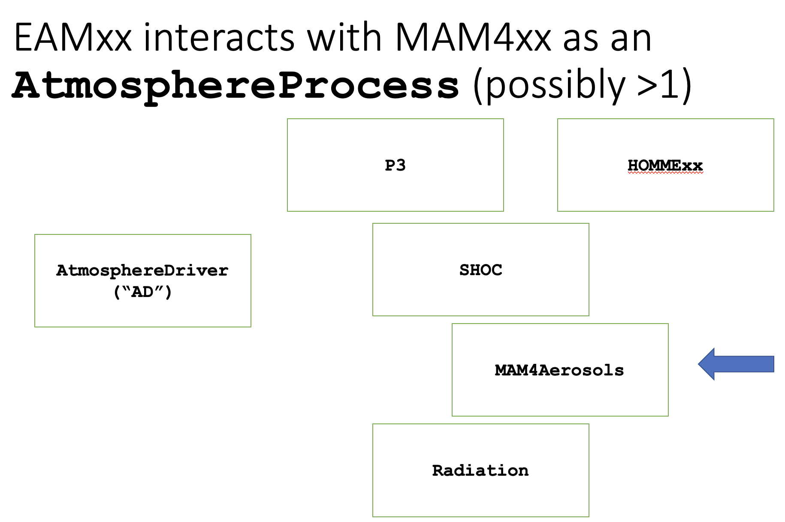
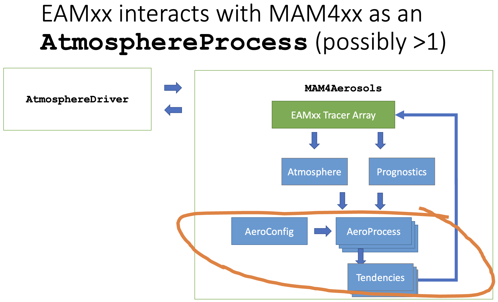
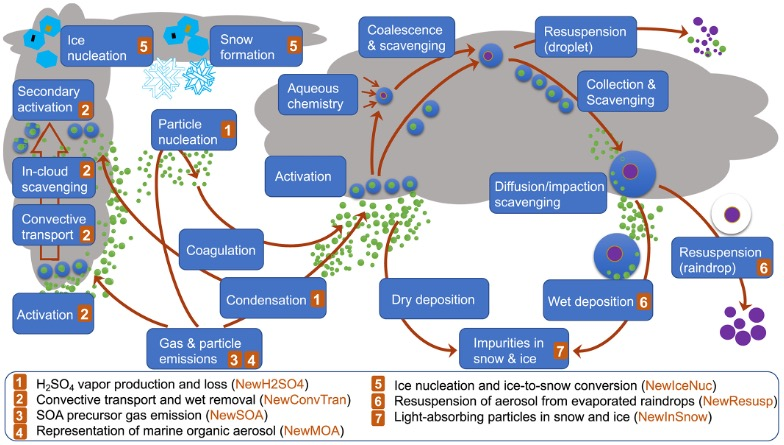

Developing MAM4xx
Welcome to the MAM4xx development team! MAM4xx is a function-by-function port of MAM4 (the 4-mode Modal Aerosol Model package) from Fortran to "performance portable" C++ code that can run on GPU accelerators as well as traditional CPUs.
This C++ port of MAM4 provides a much-needed prognostic aerosol capability to the Energy Exascale Earth System Model (E3SM), which is designed to run on the Department of Energy's leadership-class computing facilities.
Getting Help
You're part of a team. That means you shouldn't have to sit alone with a problem and scratch your head until the solution magically appears inside it. If you're stuck, organize your thoughts and ask another member of the team for their input. Not only can this save you time, but it can also help you build productive relationships with other team members.
If you're a member of the MAM4xx development team on the EAGLES Project, the
easiest way to seek help is to post a Slack message to the appropriate channel.
We have access to an ESMD-BER Slack workspace with some useful channels for
asynchronous team communication:
eagles-mam-cpp: This is the best channel for discussing and troubleshooting issues related to MAM4xx development.eagles_haero: This channel is for discussing the HAERO aerosol package "toolbox" used by MAM4xx.eagles_mamrefactor: In this channel, you can ask questions about the MAM4 box model used for porting MAM4's aerosol microphysics parameterizations.
If you're not already on the ESMD-BER Slack workspace, please ask a team
member to send you an invitation.
If you like, you can also create issues in the MAM4xx repository itself.
The Big Picture
MAM4xx makes the 4-mode modal aerosol model ("MAM4") available to EAMxx (aka "SCREAM"), which is written in C++ and uses Kokkos to achieve good parallel performance on platforms of interest to the DOE's Office of Science. EAMxx has a lot of moving parts, but MAM4xx mainly interacts only with a data structure called the Atmosphere Driver (AD).
Terminology
- A host model is an atmospheric model containing a dynamical core that solves a transport equation for mass in the atmosphere, and several physics packages that parameterize important atmospheric processes that can't be resolved by the underlying grid. EAMxx is the atmospheric host model used by E3SM version 4, so when we refer to the "host model", we refer to EAMxx.
- An aerosol package is a physics package that provides a representation of aerosols (prognostic and diagnostic variables, and tendencies for evolving the prognostics) for use by a host model. The aerosol package of interest for us, of course, is MAM4xx.
- An aerosol process is a set of functions associated with a specific part of the aerosol lifecycle (e.g. nucleation, coagulation, aging) that calculate updates to aerosol-related quantities.
- An aerosol parameterization is a function that computes one or more quantities needed to update aerosol-related quantities. An aerosol process can contain one or more related parameterizations.
- A prognostic variable is a quantity in the atmosphere whose evolution is described by a differential equation. Prognostic variables cannot be obtained using closed-form (algebraic) equations.
- A diagnostic variable is a quantity in the atmosphere that can be expressed in terms of prognostic variables in closed form (usually some algebraic expression).
- A tendency is a time derivative ("rate of change") associated with a prognostic variable. An aerosol process computes tendencies given a set of prognostic variables.
- An atmospheric state is a complete quantitative description of the atmosphere according to a host model. This description consists entirely of prognostic and diagnostic variables.
EAMxx's atmosphere driver
In essence, an atmospheric host model does the following things:
1. it initializes the state of the atmosphere at the beginning of the simulation
2. it advances the state of the atmosphere and the simulation time in a sequence
of discrete "time steps". Within each time step of length dt, tendencies
are computed for each of the prognostic variables, and the atmospheric state
is updated from time t to time t + dt by integrating these tendencies
EAMxx's atmosphere processes
To evolve the state of the atmosphere over a time period [t, t+dt], EAMxx has
an AtmosphereDriver
object that orchestrates changes to the atmospheric state resulting from
different atmospheric processes. Each of these processes is represented by a
class derived from the AtmosphereProcess
base class. The slide below, taken from the MAM4xx kick-off meeting, illustrates
the different atmospheric processes within EAMxx.

The objective of our project is to implement one or more AtmosphereProcess
subclasses that represent the effects of aerosols on the atmosphere.
Aerosol atmosphere processes
Within an aerosol-related AtmosphereProcess subclass, we extract data from
EAMxx, feed it into MAM4xx's data structures, run a set of aerosol processes,
and then incorporate the resulting output back into EAMxx's atmospheric state.
The process is roughly illustrated in this slide (also taken from the MAM4xx
kick-off meeting):

MAM4xx Code Structure
Aerosol processes and parameterizations
Aerosols are long polymer chains that are emitted from the surface of the earth and/or that form in the atmosphere as a result of collisions between gas particles. Aerosol particles have an outsized influence on cooling and warming processes in the atmosphere, and interact strongly with incoming solar radiation.

It is not possible to describe aerosol dynamics in terms of purely mechanistic processes. Instead, aerosols are assumed to form and evolve over a set of distinct stages in an "aerosol life cycle." These stages are conceptually convenient and represent phenomenology that can be compared with experimental observations. Because of this phenomenological approach, each stage of the aerosol lifecycle (which we call an "aerosol process") must be parameterized: in other words, an aerosol process is quantified in terms of a set of parameters that determine how the aerosols evolve over time.
Different aerosol models can decompose the aerosol lifecycle into different stages (processes). MAM4xx uses the aerosol processes defined by MAM4.
Aerosol process data structures
MAM4xx uses several data structures defined in HAERO. In particular:
- The
Realtype is a floating point number in single or double precision, depending on how HAERO was configured. - The
ColumnViewtype is a Kokkos view (array) representing a quantity defined on an atmospheric column. See the section on Kokkos views below for more details on this type. - The
AeroProcessclass template defines the interface for an aerosol process. - The
Atmosphereclass defines the state of the atmosphere, which is typically used as input data for aerosol processes. - The
AeroSpeciesandGasSpeciestypes define the respective physical properties of aerosol and gas molecules present in the atmosphere. - The
ThreadTeamtype is used to control a team of threads allocated to a single atmospheric column. It's used in Kokkosparallel_forloops.
The most interesting of these data types is the AeroProcess class template.
AeroProcess has two template parameters that define its behavior:
AerosolConfig, which defines parameters that describe the aerosols of concern and their particle size distribution properties. It also defines data types used by aerosol processes, likePrognostics(prognostic variables),Diagnostics(diagnostic variables), andTendencies(rates of change for prognostic variables). In MAM4xx, we use themam4::AeroConfigtype for theAerosolConfigtemplate parameter for allAeroProcesstypes.AerosolProcessImpl, which implements the behavior for anAeroProcesstype in several methods, including- an
initmethod, which is called upon construction and accepts anAerosolConfigobject and a process-specificAerosolProcessImpl::Configobject that can be used by the process implementation - a
validatemethod, which validates data in the givenAtmosphereandPrognosticsobjects. Often, this means checking for negative quantities, which are unphysical. - a
compute_tendenciesmethod, which "runs the process" at a given time over a given duration and computes tendencies for each of the prognostic variables present
- an
When we say we're porting MAM4 to C++ from Fortran, we're talking about
writing an AerosolProcessImpl class for each of the aerosol processes in MAM4
and filling the compute_tendencies method with the relevant ported Fortran
code. To see specific examples of aerosol process implementations, take a look
at the mam4::Nucleation
and mam4::GasAerExch
classes, which implement nucleation and gas-aerosol exchange (a.k.a. "condensation").
HAERO contains several other data structures in addition those mentioned above. More details on these data structures can be found in the HAERO documentation.
C++ Guidelines
C++ is a large, multi-paradigm programming language. The way C++ is used has changed so many times over the years that it's crucial for us to decide how much of the language we use, and how we'll use it.
Much of this section is up for debate/discussion, but here are some guiding principles that are unlikely to change:
- Favor clarity over cleverness. Anyone can write code that no one else can understand. Writing simple code that is intelligible to people of various skill levels is challenging, but worth the investment in time and effort. "Don't be clever." -Bjarne Stroustrup
- Avoid frivolous use of C++ features. The language is huge, and our job is not to maximize our use of it, but to use it effectively. "Every new powerful feature will be overused and misused." -Bjarne Stroustrup
- Remember your audience. We're writing science codes, so what we write
must be intelligible to scientists and others without formal training in
software engineering. Don't use
int x{};whenint x = 0;does the same thing with more clarity. "Only half of the C++ community is above average." -Bjarne Stroustrup
The astute reader may notice a certain redundancy or even repetition in these principles. It is left as an exercise to ponder why that might be so.
Style
We adhere somewhat loosely to LLVM's C++ Style Guide, with a few notable exceptions:
- We allow the use of C++ exceptions, since simulation codes have rather simplistic error handling requirements.
- Names of functions, methods, and variables use
snake_case, notcamelCaseorPascalCase. - We typically use braces to enclose logic for all
if/else/loop statements even if they are only a single line, for consistency and readability. - We use
EKAT_ASSERTinstead ofassertto ensure that all MPI processes are properly shut down when a program terminates because of a violated assertion (when MPI is enabled).
These style conventions are enforced with the following build targets, which you can run from your build directory:
make format-cxx-check: checks C++ formatting in all source files and reports any non-conforming codemake format-cxx: applies C++ formatting rules to all source files, editing them in place. Try to do this in a separate commit from your other work.
These targets are only available if you have clang-format on your system, and
they only perform their work if you have the version we support. If you have an
unsupported version of clang-format, the targets will tell you the right
version to install. Here is a guide to getting the supported
version of clang-format that is a bit more geared toward Mac users than others.
Best practices
The bullets in the LLVM C++ Style Guide provide good guidelines for best practices. Here are some additional tips/opinions:
- Avoid inheritance where possible: C++'s model of inheritance is easy to use but often hard to understand. When possible organize things so that objects belong to other objects instead of inheriting from them. Sometimes this approach is articulated as composition over inheritance. In particular, when you are tempted to use inheritance to bestow the capabilities of one type upon another, pause for a moment to think about whether there's a better way to accomplish what you're trying to do.
- Make effective use of the standard library, but don't overdo it: Sometimes
the clearest expression of an algorithm uses a
forloop and not a devilishly clever concoction of esoteric STL types, traits, and functional wizardry. This is particularly true when writing code that runs on a GPU, for which the standard template library is largely unavailable!
Kokkos, EKAT, Haero: Intra-node Parallelism
MAM4xx is written in "performance-portable" C++ code using Kokkos to dispatch parallelizable workloads to threads on CPUs or GPUs on a compute node. Kokkos allows developers to write code that is very nearly standard C++ that can run on GPU accelerators, which makes it unnecessary to learn specialized accelerator languages like CUDA and HIP.
Because MAM4xx is based on column physics, it operates on sets of independent vertical atmospheric columns and can do all of its work within a single compute node. In other words, a MAM4xx instance on a compute node has no specific need to communicate with other nodes. However, the host model that uses MAM4xx almost certainly needs inter-nodal communication, for which MPI is used.
The high-performance data types in MAM4xx used for these parallel dispatches are all provided by Kokkos. Kokkos is a general-purpose parallel programming model, and is accordingly complex, with many elaborate features and options. In order to reduce this complexity and focus on decisions and logic related to earth system models (ESMs) in general and aerosols in particular, we make use of a couple of additional layers:
- E3SM/Kokkos Application Toolkit (EKAT):
A library that defines specific Kokkos-based data structures relevant to
E3SM-related projects, and some useful bundled external libraries:
yamlcpp: a C++ YAML parser for handling configuration filesspdlog: a fancy C++ logging system that provides multiple loggers and extensible logging levelsfmt: a fancy C++ formatting system that provides Python-like formatting for C++ strings
- High performance AEROsol interface (HAERO): A library that defines data types for aerosol packages. HAERO relies heavily upon EKAT, but makes a lot of choices appropriate for aerosol column physics so we can focus on solving relevant problems and not reinventing the wheel over and over.
If MPI is enabled, EKAT configures MPI in its own build system, and this configuration is passed along to HAERO and MAM4xx. If you enable MPI, you'll need an implementation on your system like OpenMPI or MPICH.
In this section, we describe the data structures provided by HAERO (via EKAT and Kokkos). The Kokkos documentation and tutorials are fantastic resources for understanding the most important data structures and techniques we use.
Views: C++ multidimensional arrays
Fortran programmers have long been skeptical about using C++ as a scientific programming language because C++ doesn't have multidimensional arrays. (This has also frustrated a lot of C++ programmers in the HPC community!)
Kokkos provides a solution to this problem: the View
data structure. A View is basically a multidimensional array that lives in a
specific memory location (either on a CPU or a GPU). The View type has several
template parameters that dictate what it stores, where it stores things, and
how it indexes them.
As a multidimensional array, a View has a rank that indicates the number
of indices it possesses. For example, a rank-1 View V has a single index,
allowing you to retrieve the ith value with the syntax V(i). A rank-3 View
T has three indexes, providing access to an element with the syntax
T(i, j, k).
Some people refer to the rank of a View as its dimension, but this term
actually refers to the number of elements for a specific index. For example, the
dimension of the second index of T above is the valid number of values of j
that can be used in the expression T(i, j, k). Indices in a View run from
0 to dim-1, where dim is the dimension relative to the index in question.
The shape of a View is the set of dimensions of its indices. For example,
the rank-3 View T may have a shape of (100, 100, 100).
The View type is very flexible, so it can be complicated to work with
directly. HAERO provides a few useful types that nail down the various
parameters according to the needs of aerosol column physics:
ColumnView: a rank-1Viewwhose index (typically writtenk) identifies a specific vertical level in a column of "air" in the atmosphere. This type ofViewis used to represent all quantities of interest in an aerosol parameterization.TracersView: a rank-3Viewwith indicesn,i,k, that identify a specific tracer (advected quantity)nin a specific columniat a specific vertical levelk. ThisViewtype is used to extract prognostic aerosol data from an atmospheric host model (e.g. EAMxx) so it can be advanced by MAM4xx.DiagnosticsView: a rank-3Viewsimilar toTracersView, used to index diagnostic aerosol data from an atmosphereic host model for use and updating by MAM4xx.
These three View types should be all you need to implement aerosol processes
and their parameterizations. In fact, the aerosol processes themselves really
only use the ColumnView type.
NOTE: You may be tempted to use View::extent to determine the size of a
View. While this is perfectly reasonable under normal circumstances, there are
cases where a View might be larger than you would expect. This has to do with
EAMxx's vectorization strategy, which allocates and aligns memory for Views
assuming a minimum "block size" for data. For MAM4xx, all of our ColumnView
variables will be functionally equal in length to the number of vertical levels
in the atmosphere, but the actual extents may be greater.
Parallel dispatch: host and device
MAM4xx runs within a single process runs on an entire compute node, no matter how many CPUs or GPUs are available to that node. Within MAM4xx, processes on different compute nodes typically don't communicate directly with each other. Instead, the host model coordinates communication between these processes using MPI, and MAM4xx relies on the host model to get consistent data.
To understand the intranodal parallelism used by MAM4xx, we need some terminology:
- The compute host is the CPU running the process containing the atmospheric host model and MAM4xx. The compute host manages the control flow of the host model and MAM4xx--it can also do numerical calculations, but such calculations can't be done in parallel on the host.
- The compute device is where numerical calculations are performed in parallel. On a node with only CPUs, the role of the compute device is played by the same CPU as that for the compute host. On a node with access to GPUs, the compute device is the GPU, which has its own memory and (very different!) processing hardware. Logically, the compute device is distinct from the compute host, because only the compute device can execute code in parallel.
Strictly speaking, a machine can have more than one compute device. For example, a many-core CPU with a GPU has two potential compute devices: the CPU and the GPU. We will ignore this possibility and assume that all calculations are done on a single compute device, which we call the device.
To make use of the device on a compute node, MAM4xx uses the parallel dispatch capabilities provided by Kokkos. MAM4xx's "column physics" approach allows it to take advantage of a specific parallel dispatch approach based on the Kokkos TeamPolicy. This EAMxx Confluence page explains how it works.
Frequently Asked Questions
How are the atmospheric columns laid out in EAMxx?
This Confluence page describes the computational grid(s) used by EAMxx.